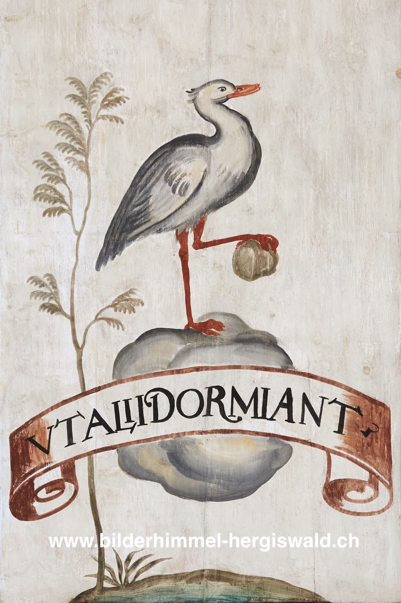

Süd 49 – Der wachende Kranich

Motto: UT ALII DORMIANT.
Übersetzung: Damit die anderen schlafen können.
Erklärung: Auch dieses Emblem geht auf eine alte Tiergeschichte zurück. Von den Kranichen wurde erzählt, dass sie nachts Wache halten würden, damit die anderen ungestört schlafen können. Um dabei nicht selbst einzunicken, sollte der wachende Vogel einen Stein in der Kralle halten. Fiele ihm der Stein aus dem Fuss, würde ihn das Geräusch sofort wieder wecken. Eine ziemlich raffinierte Form von Selbstkontrolle also.
Seit der Antike wurde dieses Bild als Zeichen der Wachsamkeit verstanden. In der Renaissance und im Barock taucht der Kranich deshalb immer wieder in Emblemen auf, meist als Symbol für Aufmerksamkeit, Schutz und Ausdauer. Auch Filippo Picinelli, ein italienischer Gelehrter und Emblembuchautor des 17. Jahrhunderts, greift dieses Motiv auf. Sein Motto lautet UT ALII DORMIANT, also: damit die anderen schlafen können. Der wachsame Kranich wird bei ihm zum Bild eines Herrschers, der für andere sorgt, während diese ruhig schlafen dürfen.
Meglinger übernimmt das Motiv, verändert es aber deutlich. Bei ihm steht der Kranich allein auf einer kleinen Wolke über dem Boden und hält Wache. Die anderen Vögel sind gar nicht mehr zu sehen, und genau das ist wohl Absicht. Durch diese Reduktion verschiebt sich die Bedeutung: Der Kranich wird zu einem Bild Marias, die schützend über die Gläubigen wacht.
Das Emblem zeigt Maria damit nicht nur als fürsorglich, sondern auch als erhöht und aufmerksam. Was bei Picinelli noch fast wie ein kluger Naturtrick wirkt, erhält in Hergiswald eine marianische Deutung: Maria wacht, damit andere in Ruhe schlafen können.
Diesen Gedanken greift auch Ludwig von Wyl in einem Lobgesang von 1651 auf. Hergiswald erscheint dort als Ort der Sicherheit, an dem Maria wie eine Hüterin über die Menschen wacht.